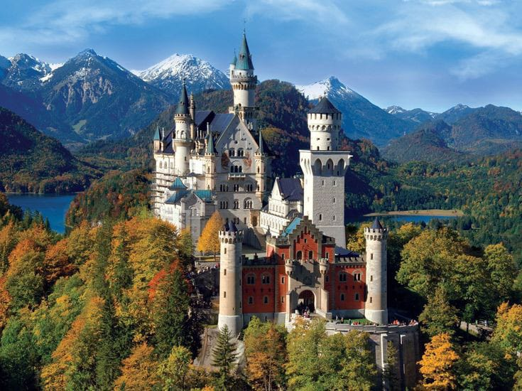
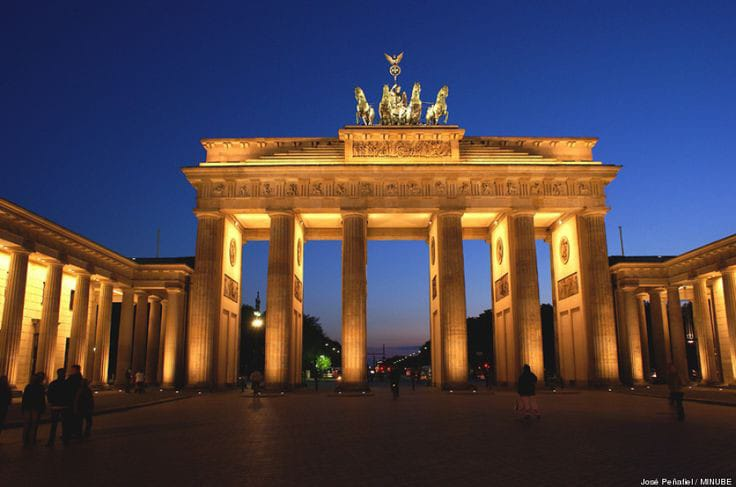
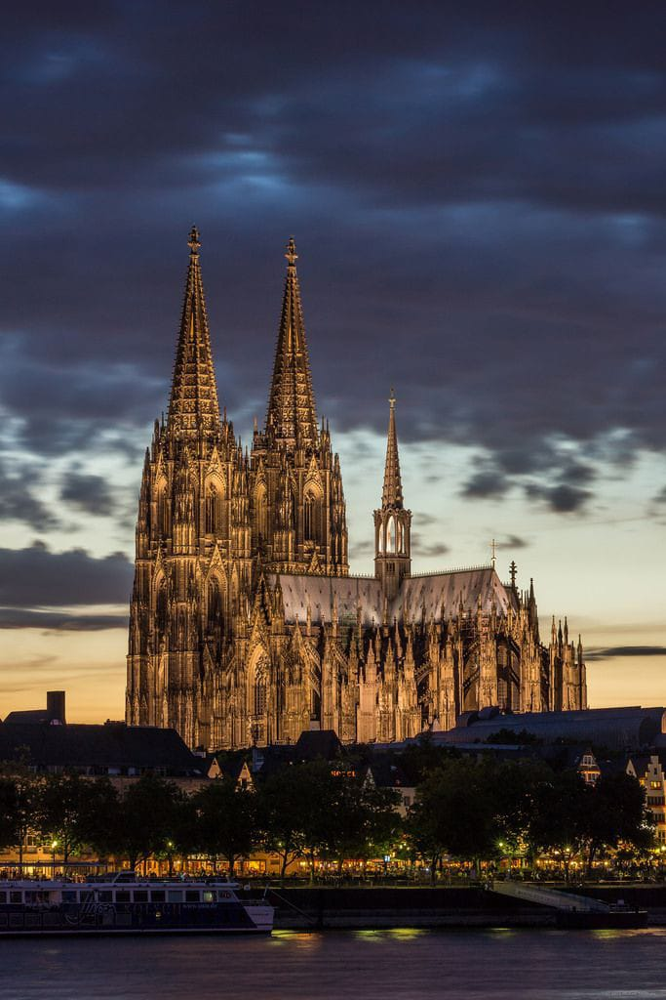
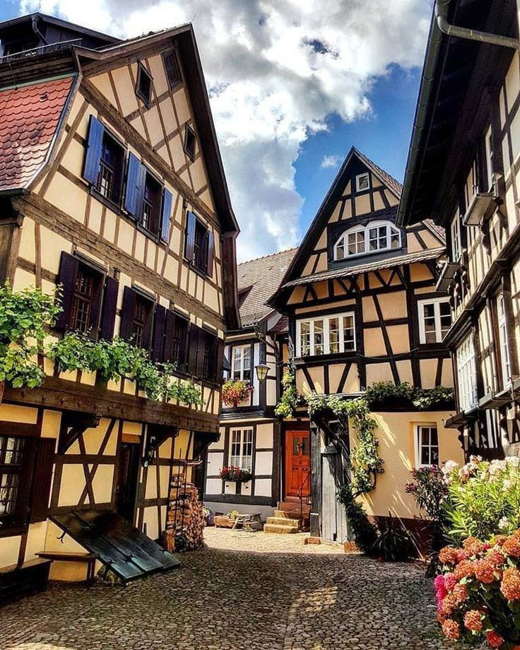
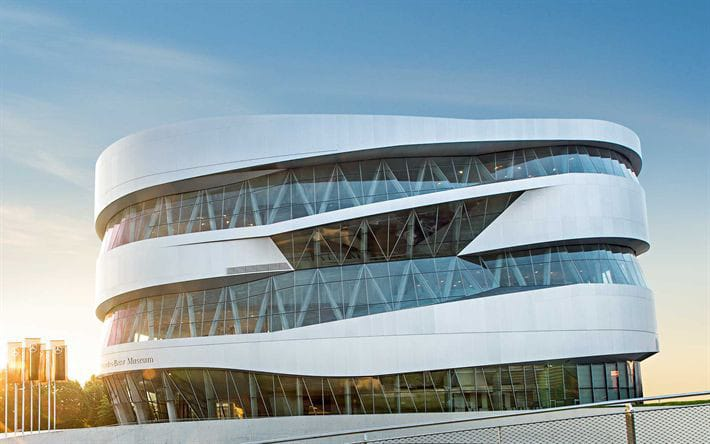
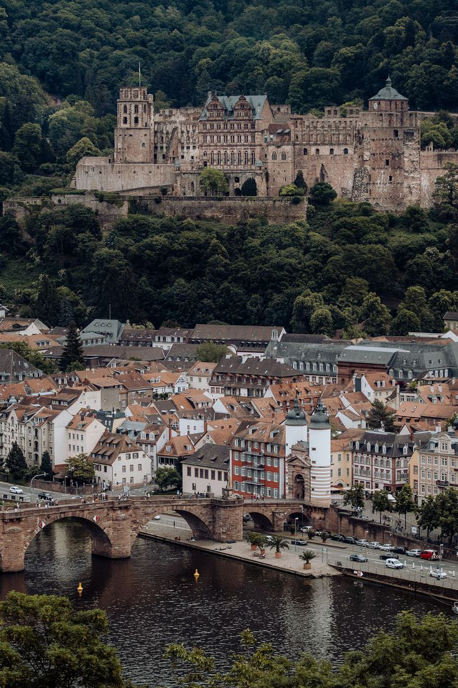

Explora la Esencia de Alemania: Un Viaje entre Tradición y Vanguardia
¡Bienvenido a la cuna de la historia, la cultura y la innovación! Alemania, un destino que fusiona la rica herencia de sus castillos medievales con
la modernidad de sus ciudades vibrantes. Desde las majestuosas orillas del río Rin hasta la energía vanguardista de Berlín, sumérgete en un viaje
donde cada rincón cuenta una historia única.
Descubre el turismo en Alemania y déjate cautivar por sus paisajes, su historia y su hospitalidad. ¡Embárcate en una experiencia que despertará
tus sentidos y te dejará con recuerdos para toda la vida! Alemania te espera con los brazos abiertos.
Destinos Mágicos en Alemania
Alemania es un país rico en historia, cultura y belleza natural, con una amplia variedad de atractivos turísticos. Aquí hay algunos de los destinos y
lugares más destacados para visitar en Alemania:
Castillos de Baviera
Alemania es famosa por sus impresionantes castillos, especialmente en la región de Baviera. El Castillo de Neuschwanstein es uno de los más
conocidos y ha inspirado a numerosos cuentos de hadas.

Puerta de Brandeburgo (Berlín)
Este icónico monumento en Berlín es un símbolo de la reunificación alemana y un punto de referencia importante. Es particularmente impresionante
iluminada por la noche.

Catedral de Colonia
La catedral gótica de Colonia, conocida como la Kölner Dom, es una de las catedrales más impresionantes de Europa y domina el horizonte de la ciudad.

Selva Negra
Una región en el suroeste de Alemania conocida por sus densos bosques, pintorescos pueblos y relojes de cuco. Es un destino popular para practicar
senderismo y disfrutar de la naturaleza.

Museo Mercedes-Benz (Stuttgart)
Para los amantes de los automóviles, este museo en Stuttgart ofrece una visión fascinante de la historia de la famosa marca alemana.

Heidelberg
Una ciudad universitaria con un casco antiguo encantador y un famoso castillo que se alza sobre el río Neckar.

Un Viaje Inolvidable de 5 Días desde Berlín hasta la Selva Negra
5 días y 4 noches en Alemania te permitirá explorar algunos de los atractivos más destacados del país. Aquí te presentamos
una sugerencia de itinerario que podrías seguir, teniendo en cuenta que puedes ajustarlo según tus preferencias y el momento
del año.
Día 1: Berlín
Mañana:Llegada a Berlín, exploración de la Puerta de Brandeburgo y paseo por Unter den Linden.
Tarde:Visita al Museo de Pérgamo en la Isla de los Museos y caminata por el Barrio de Nikolaiviertel.
Noche:Cena en un restaurante local y tiempo libre para explorar la vida nocturna de Berlín.
Día 2: Berlín
Mañana:Visita al Muro de Berlín y East Side Gallery. Puedes hacer un recorrido en bicicleta por
el Muro para una experiencia más completa.
Tarde:Exploración del barrio de Kreuzberg, conocido por su ambiente multicultural y artístico.
Visita al Checkpoint Charlie.
Noche:Cena en uno de los restaurantes de la zona y tiempo libre.
Día 3: Heidelberg
Mañana:Viaje a Heidelberg. Visita al Castillo de Heidelberg y sus jardines.
Tarde:Descenso al casco antiguo de Heidelberg para explorar la Plaza del Mercado y la Universidad
de Heidelberg.
Noche:Cena en un restaurante tradicional a orillas del río Neckar.
Día 4: Castillo de Neuschwanstein y Füssen
Mañana:Viaje a Füssen. Visita al famoso Castillo de Neuschwanstein, una de las joyas de Baviera.
Tarde:Exploración del encantador pueblo de Füssen y paseo por el lago Alpsee.
Noche:Cena en un restaurante local.
Día 5: Selva Negra y Stuttgart
Mañana:Viaje a la Selva Negra. Visita a la ciudad de Triberg y sus famosas cataratas.
Tarde:Conducción a Stuttgart. Visita al Museo Mercedes-Benz.
Noche:Cena en Stuttgart y tiempo libre para disfrutar de la ciudad.
Planificando con Presupuesto: Descubre los Detalles Financieros de tu Aventura Alemana de 5 Días
Los costos exactos del viaje puede depender de la temporada del año, las tarifas actuales, la elección de hoteles y restaurantes, y si se aprovechan ofertas o descuentos.
Sin embargo, una estimación general de los costos para un viaje de 5 días y 4 noches en Alemania desde Colombia, asumiendo un presupuesto moderado, es el siguiente.
Vuelos (ida y vuelta desde Bogotá, Colombia a Berlín, Alemania):
Precio estimado: $1,000 - $1,500 USD por persona.
Hospedaje:
Berlín (2 noches): $300 - $500 USD.
Heidelberg (1 noche): $80 - $150 USD.
Füssen (1 noche): $100 - $200 USD.
Stuttgart (última noche): $120 - $180 USD.
Transporte interno (trenes y/o autobuses entre ciudades):
Precio estimado: $150 - $250 USD por persona.
Comida:
Precio promedio por comida: $15 - $30 USD por persona.
Total estimado para 5 días: $300 - $600 USD por persona.
Entradas a sitios turísticos y actividades:
Museo de Pérgamo (Berlín): $15 - $20 USD.
Castillo de Heidelberg: $10 - $15 USD.
Castillo de Neuschwanstein: $20 - $30 USD.
Museo Mercedes-Benz (Stuttgart): $15 - $25 USD.
Otras atracciones y actividades: $50 - $100 USD.
Transporte local (billetes de tren, autobús, etc.):
Precio estimado: $50 - $100 USD por persona.
Gastos personales (compras, souvenirs, etc.):
Precio estimado: $100 - $200 USD por persona.
Seguro de viaje:
Precio estimado: $50 - $100 USD por persona.
Costo total estimado del viaje:
Rango bajo: $2,305 - $3,530 USD por persona.
Rango alto: $3,025 - $5,085 USD por persona.
Nota: Los precios son aproximados y están sujetos a cambios. Se recomienda verificar las tarifas actuales y realizar reservas con anticipación para obtener mejores precios.